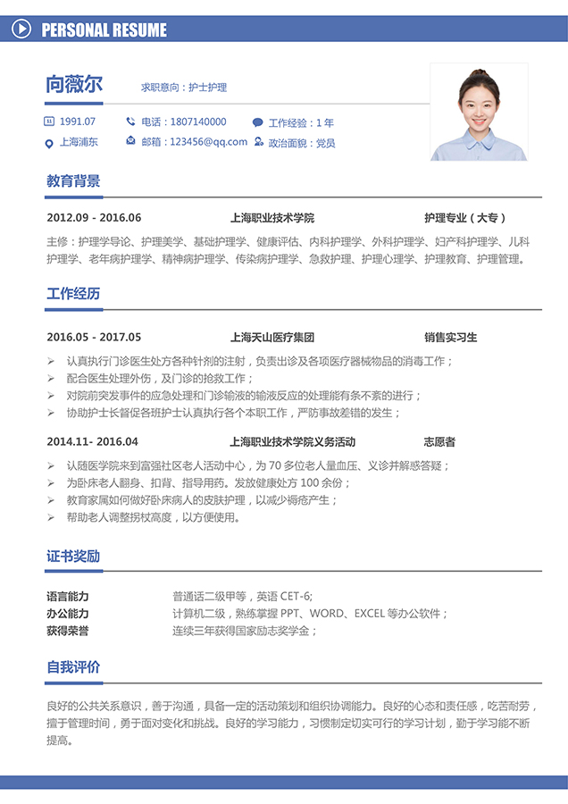
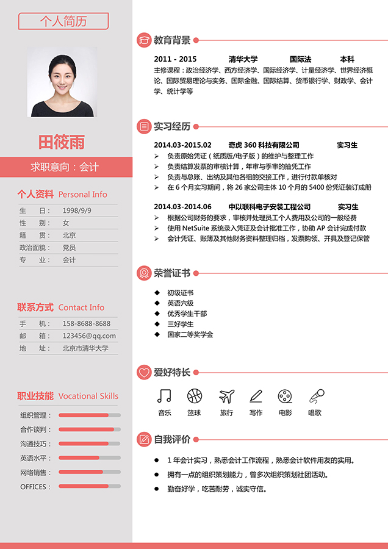
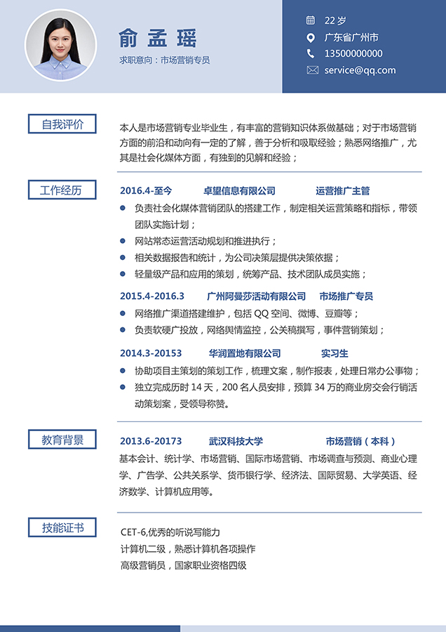

项目要求：
1、此项目会有二级开发和交接的可能，所以需要对代码写好注释。
2、要求书写完整的前后端接口对接文档。
3、最大开发时长为3周，需要在日期前完成，开始日期由发布当日开始算起。
4、ajax返回值里， 要携带一个code参 数存储状态码
example : res.send({code : 200，data: '就是这样'})
5、代码要求:
a. 全部使用es6代码构建项目。
b.项目接口拆分为灵活路由。c.前端AJAX接口命名
i. 获取数据使用get请求，名字都以get开
始，例如'/getReadData'
ii.发送数据使用post请求，名字以send开
始，例如'/sendNewData'
6、最终生成的图片大小宽度为900px，高度根据所填内容自动适应。
项目描述：
此项目是要让大家制作一个在线生成简历的一站式服务端，具体操作大家可以参考一下超级简历的操作流程
1、用户在相应输入框中输入相应信息。
2、用户选择喜欢的模板（提供三个就好）。
3、将所填数据及所选模板提交到后台并生成一个简历图片。
参考网站：https://www.wondercv.com/?_c=baidu&_p=pctyc&_k=0989
参考网站
页面描述：
关于页面的设计大家可以参考超级简历的制作网站，简历的模板大家在网上自行寻找一下，类似图中这种。


